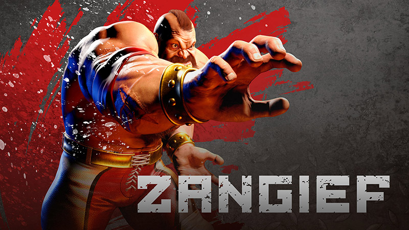

ストリートファイター コマンドリスト
キャラクターリストに戻る操作方法：例

- P=パンチ K=キック（P弱やK強などは、弱パンチや強キックになる。）
- コマンド例：リュウで LS を↓ ↘ →の順にたおし、P(△ または □ または R1)のボタンを押すと波動拳を出すことができる。
|
 |
|||
| 技名 | 入力 | 説明 / 備考 | カテゴリ / メモ |
|---|---|---|---|
| ダブルラリアット | P P | 腕を広げて回転しながらのラリアットで攻撃する技。 回転中は相手の飛び道具攻撃に対して無敵となる。 |
必殺技近距離 |
| スクリューパイルドライバー | ↻ + P | 相手を掴み、空中へ上昇して回転しながら叩き付ける投げ技。 投げ間合いが広いのでメインで狙う技となる。 |
必殺技近距離 |
| ボルシチダイナマイト | ↻ + K | 空中で相手を掴み、打撃で打ち上げた後に回転して叩き付ける技。 空中の相手にのみヒットさせる事が可能。 |
必殺技近距離 |
| シベリアンエクスプレス | → ↘ ↓ ↙ ← + K | 相手に走り寄って掴み、強力なパワーボムを叩き込む投げ技。 奇襲やガード崩しとして有効。 |
必殺技近距離 |
| サイクロンラリアット | ↓ ↘ → ↓ ↘ → + P | 高速回転で相手を吸い寄せて掴み、投げで強烈に叩き付ける技。 左右入力で投げる位置を調整する事が可能。 |
スーパーアーツ2近距離 |
| ボリショイストームバスター | ↻ ↻ + P | プロレスさながらのフィニッシュホールドを決める強烈な投げ技。 接近戦のガード崩しで一気に大きなダメージを奪える。 |
スーパーアーツ3近距離 |